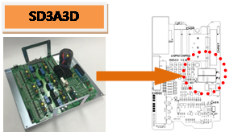
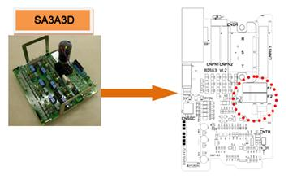

Previous error code: E0034 AMP over-current error
1.1.60.1. Outline
The protection fuse is disconnected because over current flew through the surge protector when the over or surge voltage flew into the 3-phase voltage(R, S, and T) to servo drive unit..
1.1.60.2. Causes and examine methods
|
F1 or F2 disconnected due to voltage surge into the servo AMP
(1) Pease examine the fuse in the Servo Drive Unit. n Check whether the servo drive unit fuse is disconnected.
<Case: Fuse has not been cut-off> (2) Check the cable related to the overcurrent error detection. n Please replace CNSGC cable and examine it. (3) Check the parts related to the overcurrent error detection. n Please replace BD530/BD531 and examine it. n Check after replacing the servo drive unit.
<Case: Fuse has been cut-off>:E02510 AMP AC input voltage is high – fuse disconnected |
(1) Pease examine the fuse in the Servo Drive Unit.
Occurrence of AMP over-current error is detected by a diode module when the input 3-phase voltage exceeds the specification. Generated error will be handled by the BD530/BD531 through a CNSGC cable.
(a) Hi5a-S00 controller (SD3X3Y)

(b) Hi5a-S30 controller (SD3A3D)

(c) Hi5a-N00 controller (SD1L2C)

(d) Hi5a-N30 controller (SA3A3D)
Figure 1.171 Position of the AMP overcurrent detection fuse
Figure 1.172 Appearance of Disconnected AMP Over-Current Detection Fuse
(2) Check the cable related to the overcurrent error detection.
n Replacement and examining of CNSGC cable
Replace the CNSGC cable with new one and test it. If the error does not persist, cable connection problem caused this error. Please replace the CNSGC cable with new one.
(3) Check the parts related to the overcurrent error detection.
n Replacement and examining of BD530/BD531
Replace the BD530/BD531 with new one and test it. If the error does not persist, the board malfunction caused this error. Please replace the BD530/BD531 with new one.
n Replacement and inspection of servo drive unit
The AMP overcurrent error detection module is as shown below.
Ø Hi5a-S controller
l Medium size Robot's Servo Drive Unit: SD3X3Y
l Small size Robot's Servo Drive Unit: SD3A3D
Ø Hi5a-N controller
l Medium size Robot's diode module : SD1L2C
l Small size Robot's Servo Drive Unit : SA3A3D
Please check the components in the controller that you are currently using and examine it. Please replace it with new one and see if the error persists.